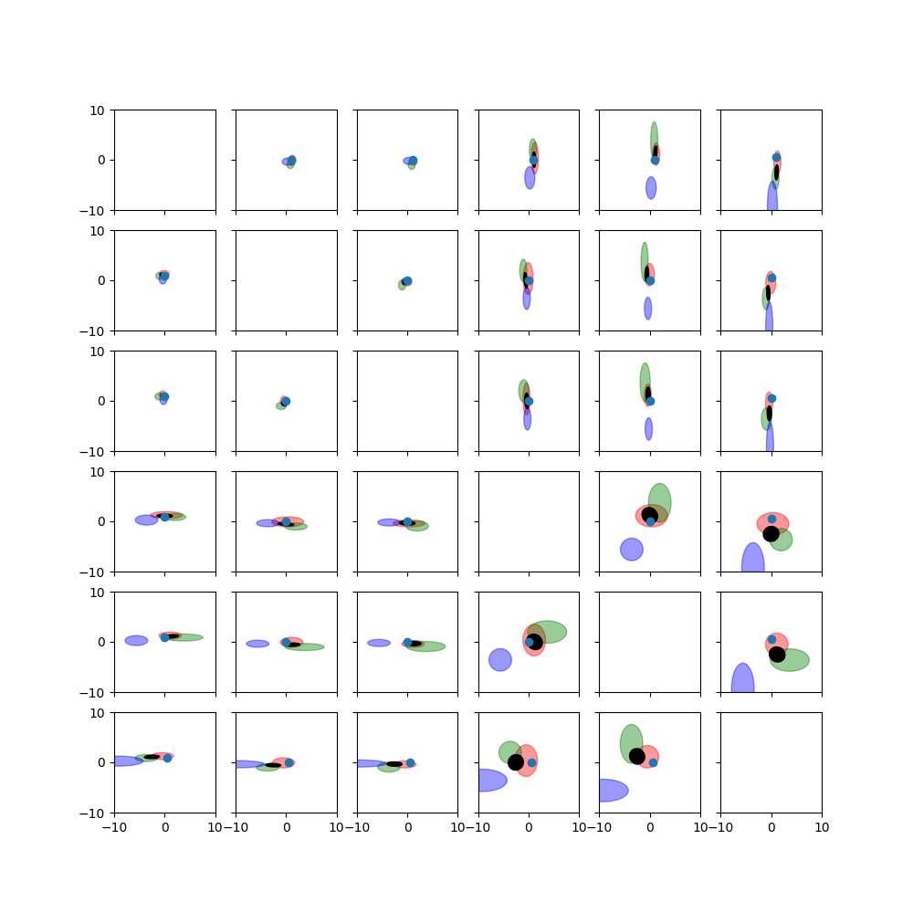

Note
Go to the end to download the full example code.
Fuse 3 Poses¶
Each of the poses is has an associated covariance that is considered during the fusion. Each of the plots shows a projection of the distributions in exponential coordinate space to two dimensions. Red, green, and blue ellipses represent the uncertain poses that will be fused. A black ellipse indicates the fused pose’s distribution.
This example is from
Barfoot, Furgale: Associating Uncertainty With Three-Dimensional Poses for Use in Estimation Problems, http://ncfrn.mcgill.ca/members/pubs/barfoot_tro14.pdf
import numpy as np
import matplotlib.pyplot as plt
import pytransform3d.uncertainty as pu
import pytransform3d.transformations as pt
def to_ellipse(cov, factor=1.0):
"""Compute error ellipse.
An error ellipse shows equiprobable points of a 2D Gaussian distribution.
Parameters
----------
cov : array-like, shape (2, 2)
Covariance of the Gaussian distribution.
factor : float, optional (default: 1)
One means standard deviation.
Returns
-------
angle : float
Rotation angle of the ellipse.
width : float
Width of the ellipse (semi axis, not diameter).
height : float
Height of the ellipse (semi axis, not diameter).
"""
from scipy import linalg
vals, vecs = linalg.eigh(cov)
order = vals.argsort()[::-1]
vals, vecs = vals[order], vecs[:, order]
angle = np.arctan2(*vecs[:, 0][::-1])
width, height = factor * np.sqrt(vals)
return angle, width, height
def plot_error_ellipse(ax, mean, cov, color=None, alpha=0.25,
factors=np.linspace(0.25, 2.0, 8)):
"""Plot error ellipse of MVN.
Parameters
----------
ax : axis
Matplotlib axis.
mean : array-like, shape (2,)
Mean of the Gaussian distribution.
cov : array-like, shape (2, 2)
Covariance of the Gaussian distribution.
color : str, optional (default: None)
Color in which the ellipse should be plotted
alpha : float, optional (default: 0.25)
Alpha value for ellipse
factors : array, optional (default: np.linspace(0.25, 2.0, 8))
Multiples of the standard deviations that should be plotted.
"""
from matplotlib.patches import Ellipse
for factor in factors:
angle, width, height = to_ellipse(cov, factor)
ell = Ellipse(xy=mean, width=2.0 * width, height=2.0 * height,
angle=np.degrees(angle))
ell.set_alpha(alpha)
if color is not None:
ell.set_color(color)
ax.add_artist(ell)
x_true = np.array([1.0, 0.0, 0.0, 0.0, 0.0, np.pi / 6.0])
T_true = pt.transform_from_exponential_coordinates(x_true)
alpha = 5.0
cov1 = alpha * np.diag([0.1, 0.2, 0.1, 2.0, 1.0, 1.0])
cov2 = alpha * np.diag([0.1, 0.1, 0.2, 1.0, 3.0, 1.0])
cov3 = alpha * np.diag([0.2, 0.1, 0.1, 1.0, 1.0, 5.0])
rng = np.random.default_rng(0)
T1 = np.dot(pt.transform_from_exponential_coordinates(
pt.random_exponential_coordinates(rng=rng, cov=cov1)), T_true)
T2 = np.dot(pt.transform_from_exponential_coordinates(
pt.random_exponential_coordinates(rng=rng, cov=cov2)), T_true)
T3 = np.dot(pt.transform_from_exponential_coordinates(
pt.random_exponential_coordinates(rng=rng, cov=cov3)), T_true)
x1 = pt.exponential_coordinates_from_transform(T1)
x2 = pt.exponential_coordinates_from_transform(T2)
x3 = pt.exponential_coordinates_from_transform(T3)
T_est, cov_est, V = pu.pose_fusion([T1, T2, T3], [cov1, cov2, cov3])
x_est = pt.exponential_coordinates_from_transform(T_est)
_, axes = plt.subplots(
nrows=6, ncols=6, sharex=True, sharey=True, squeeze=True, figsize=(10, 10))
factors = [1.0]
for i in range(6):
for j in range(6):
if i == j:
continue
indices = np.array([i, j])
ax = axes[i][j]
for x, cov, color in zip([x1, x2, x3], [cov1, cov2, cov3], "rgb"):
plot_error_ellipse(
ax, x[indices], cov[indices][:, indices],
color=color, alpha=0.4, factors=factors)
plot_error_ellipse(
ax, x_est[indices], cov_est[indices][:, indices],
color="k", alpha=1, factors=factors)
ax.scatter(x_true[i], x_true[j])
ax.set_xlim((-10, 10))
ax.set_ylim((-10, 10))
plt.show()
Total running time of the script: (0 minutes 0.917 seconds)